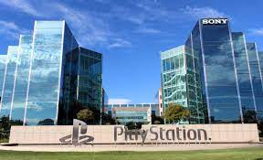

Sony est une entreprise réputée pour ses compétence dans l’informatique et le jeu vidéo fondé le 7 mai 1946 à Tokyo par Masaru Ibuka et Akio Morita
- 7 Mai 1946 création de Sony / activités comme informatique, jeu vidéo, téléphonie, musique, cinéma, audiovisuel.

- Nationalité du groupe: Japonais (Tokyo)
- Environ 109 000 employés
- Différentes filiales comme: Sony Pictures Entertainment, So-net, Sony Europe, Culver Max entertainment, AmpliFIND Music Services, Inc. et pleins d’autres filiales.
- Les créateurs de Sony sont Masaru Ibuka et Akio Morita
Activités actuelles
Sony est active dans différentes activités comme l’électronique, la téléphonie, le jeux vidéo, l’informatique, la musique, le cinéma et audiovisuelle. Elle est à la première place sur le marché mondial avec 46% des dépenses du marché.
Sony va sortir en 2023 un second casque de réalité virtuelle.
Sortie de nouveau jeux
Le chiffre d'affaires de sony est de 72 milliards d’euros et connaît une progression de 10% de 2021 à 2022.
Sa stratégie actuelle
Stratégie financière:
-Stratégie d’investissement
-Acquisition d’EMI music, Crunchyroll
-Achat de parts dans Epic Games et Insomniac (Studios de jeu vidéo)
-Achat de parts de Discord avec volonté de l’intégrer à Playstation Network
L’entreprise vise
Stratégie Produit/com:
-Plus à l’E3, bénéficiant des showcases bien gérés (pas de direct pour éviter polémiques)
-Vise un succès immédiat de ses jeux en délaissant les jeux moins populaires
L’écologie et Green IT
Sony s’engage pour la protection de l’environnement et la conservation des ressources. Leur objectif est d’atteindre une empreinte environnementale nulle d’ici 2050 pour l’ensemble de ses produits, conformément au programme Tolérance zéro. Pour cela, ils travaillent sur :
l’économie d’énergie avec ses consoles
une transition vers les énergies renouvelables (utiliser 100% d’énergies renouvelables d’ici 2030)
le respect de l’environnement (plastiques recyclés, emballages écologiques, matériaux recyclables)
Son actualité
-Sony va produire 2 millions de casques de réalité virtuelle pour la sortie de la PlayStation VR2 pour sa sortie en 2023.
-Sony veut toucher une nouvelle frontière, l'espace. Le groupe japonais d'électronique annonce la création de Sony Space Communications le 3 juin 2022 et veulent fournir des services de communication sattelitaires sans fil.
Pour aller plus loin
Rapport entre Sony et Musique:
EMI music Sony walkman dans les années 80 (l’un des premiers baladeurs, sorti en 1979, a révolutionné l’écoute de la musique en débarrassant les gens de la contrainte d’une lourde installation pour écouter de la musique), Sony Music Entertainment (1991)
Sony a commencé la conception de consoles de jeux vidéo en décembre 1994 avec la Playstation 1, une console de jeux vidéo qui été pour l’époque révolutionnaire comme nous le montre ses ventes en étant premier seulement de 2 ans après son introduction dans le marché avec 12 millions d’exemplaires vendus à travers le globe, à titre de comparaison sa concurrence était à 7 millions de ventes.
Ensuite Sony va continuer avec la Playstation 2 puis la 3 jusqu’à arriver à la Playstation 5 en 2020, soit 1 nouveau modèle de Playstation classique tous les 6 ou 7 ans en fonction de la console, ces modèles étant toujours aussi réputés et vendus qu’auparavant.
Sony va également inventer des consoles moins connues comme la PSX, la Playstation Portable et la Playstation Vita qui seront au final moins achetés que les autres modèles voir non commercialisés en Europe pour la PSX.